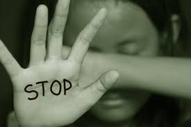

How to face a situation

People often say that if they were assaulted they would fight back or run away. But, in fact, most people do not. Their automatic reaction is to freeze and not do anything.
this is bcause they :
- don’t believe this can be happening to them
- are frightened they might get injured or killed if they resist
- feel completely helpless
What would you do if you see some bad is going to happen to you
- scream loud as much as you can
- run somewhere where you find a safe place
a person may experience one emotion one day and the opposite reaction the next. For example, a survivor may feel the desire to isolate and be alone, but later fear being left alone.Listed below are some common reactions to sexual assault. Because everyone reacts to trauma differently, it is important to remember that reactions listed and not listed are both normal.
- Frozen Fright: During a sexual assault, some people “freeze” or “tense up” and are unable to move. This is physiological response that our bodies use to survive a life threatening situation and is completely normal.
- Dissociation: this occurs during trauma when the mind tries to separate from the trauma occurring on the body. During an assault, a victim may dissociate by focusing on the details of a wallpaper pattern or reciting poems in their head. After an assault, many people report feeling that they are in a dream-like state